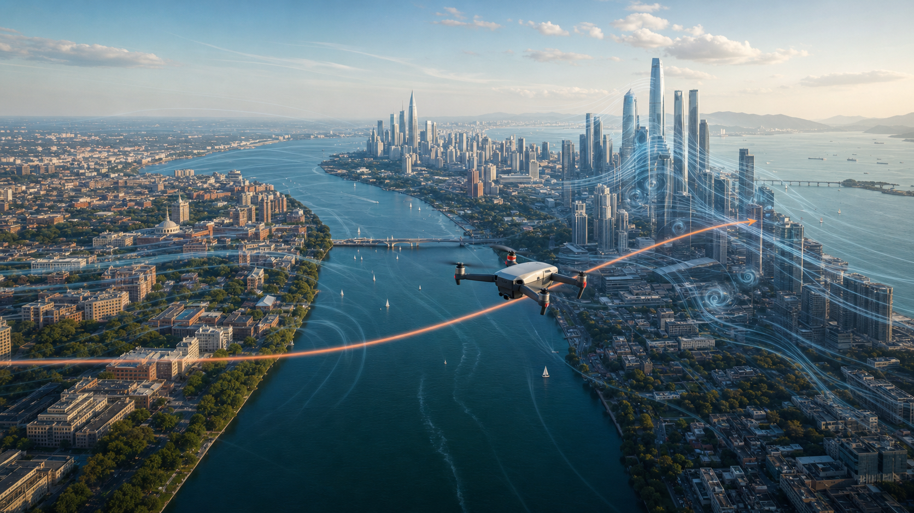

Harvard to MIT
0.330
Estimated urban wind-risk score for the lower-rise Cambridge route.

Independent research · Differential equations
How different city forms redirect drone flight from Harvard to MIT in Boston and from Spring Bamboo to Poly Theatre in Shenzhen.
Key findings
Harvard to MIT
0.330
Estimated urban wind-risk score for the lower-rise Cambridge route.
Spring Bamboo to Poly Theatre
0.790
Estimated score for Shenzhen's denser, taller urban corridor.
Maximum route deviation
36 m vs 56 m
The Shenzhen route bends farther from the ideal no-wind path.
Urban form model
The risk score combines normalized building height, building density, and street-canyon intensity using weights of 0.5, 0.3, and 0.2.
Building height
Building density
Street-canyon intensity
Weighted risk score
Flight path comparison
Runge-Kutta estimates are shown against each ideal straight route. The Shenzhen path curves much farther away before returning to its destination.
Cambridge / Boston
Shenzhen / Nanshan
Numerical validation
Euler, Improved Euler, and fourth-order Runge-Kutta produce nearly identical deviations within each city.
| Method | Boston | Shenzhen |
|---|---|---|
| Euler | 35.55 m | 55.54 m |
| Improved Euler | 35.50 m | 55.54 m |
| Runge-Kutta | 35.57 m | 56.00 m |
Result: Shenzhen's modeled deviation remains about 20 meters greater regardless of the approximation method.
Model scope
The urban factors are estimated normalized inputs. Real-world route planning would require live wind observations, more routes, and finer numerical resolution.
Continue reading
The full 29-page paper documents the urban risk model, all 20-step calculations, city maps, assumptions, and comparison across three numerical methods.
Read full paper